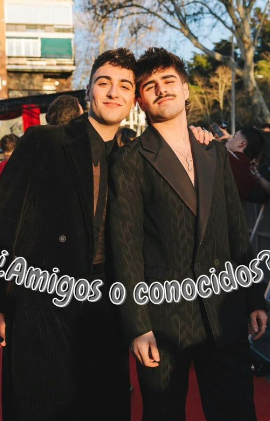
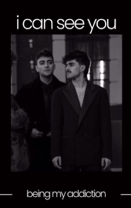

Fanfics de Wattpad



¿Amigos o conocidos? - Juantin.
Juanjo y Martin habían sido amigos durante mucho tiempo. Martin era el mejor amigo de la ex novia de Juanjo, fue por esto que se conocieron allá por 2022.
Nunca se habian atraido ni física ni emocionalmente. Eran muy amigos, pero únicamente amigos.
Malas decisiones por parte de Juanjo conllevaron a que perdiera toda su relación de amistad con Martin.
Ahora, en 2026, dos años más tarde, la vida les vuelve a juntar, esta vez quizá para siempre.

i can see you
Martin es perseguido por los paparazzis por las ajetreadas calles de Madrid. No paran de preguntarle sobre su reciente relación con el cantante conocido por ser un rompecorazones: Juanjo Bona.
Lo que no saben, es que todo ha sido una farsa para esconder el escándalo que habían montado el cantante y su ex; y realmente Martin y Juanjo no se soportan; son dos personalidades completamente opuestas. El equipo de Juanjo apostó por el niño bueno de la industria. Aunque ambos deben intentar que esto no llegue a la prensa y mantener su relación cordial, sin enamorarse.
¿Serán capaces?
Todo contrato tiene una duración.